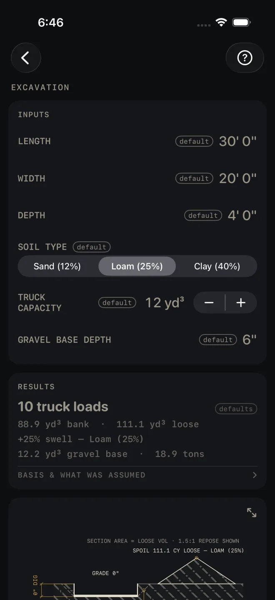

Excavation
What it's for
Figures the dirt coming out of a rectangular dig and the trucks to haul it. You get the volume in the ground, the larger volume once it is dug and loose, the number of truck loads, and the gravel for the base in yards and tons, with a section drawing of the cut. It is a quantity takeoff. It does not design the slope or shoring of the cut.
Step by step
The example is the screen as it opens: a dig 30' 0" by 20' 0" and 4' 0" deep, in loam, with 12 yd³ trucks and a 6" gravel base.

1 2 3 4 5- Enter LENGTH and WIDTH of the dig at the bottom of the cut. Include the working room outside the footing if you will dig it. The volume is figured with straight vertical sides.
- Enter DEPTH from existing grade to the bottom of the dig. The gravel base sits inside this depth, so measure to the underside of the gravel.
- Pick SOIL TYPE: Sand (12%), Loam (25%) or Clay (40%). The percent is the swell: how much the dirt grows once it is dug.
- Set TRUCK CAPACITY in cubic yards, from 1 to 20, to match the trucks you are hiring.
- Enter GRAVEL BASE DEPTH, the compacted thickness of stone over the whole footprint. Enter 0" for no gravel and the gravel line and the material list drop away.
- Read RESULTS. On the defaults: 10 truck loads, 88.9 yd³ bank · 111.1 yd³ loose, +25% swell — Loam (25%), 12.2 yd³ gravel base · 18.9 tons.
Reading the results
 7
10
11
12
7
10
11
12
- The headline is truck loads, rounded up to whole trucks. It is figured from the loose volume, not the bank volume.
- Bank and loose. Bank is the dirt as it sits in the ground: length by width by depth. Loose is bank plus the swell for your soil. Loose is what you haul and what you stockpile.
- Gravel base is in yards and tons. It carries an over-dig and edge-loss allowance. The material list row and the drawing note both say so: incl. ~10% over-dig/edge loss. The dirt volumes carry no allowance at all.
- The drawing is a section across the width, with the spoil pile beside it. Pinch to zoom and use the expand button for full screen. See Drawings.
- The notes under the drawing are where you check what was assumed. BASIS & WHAT WAS ASSUMED states the swell for each soil, the gravel over-dig and the tons per cubic yard. The notes give the footprint area and perimeter, the bank volume with NEAT LINE, VERTICAL SIDES, the gravel thickness with the level of its top below grade, and the loads with how full the last truck is, here LAST 3.1 CY. The sloped sides drawn on the section are a picture only: the note reads CLASSIFY SOIL ON SITE — 1:1 SHOWN, NOT IN VOLUME, so if you lay the sides back that extra dirt is not counted.
- SLOPE OR SHORE PER OSHA 1926 SUBPART P appears in red once the dig is 5' or deeper, where OSHA 1926.652 requires a protective system. Shallower digs carry UNDER 5' — COMPETENT PERSON TO CHECK FOR CAVE-IN instead. Neither is a failed check, and the calculator does not classify your soil or size the slope.
Excavation is a Pro calculator. SHARE PDF and SAVE are Pro
as well, a one-time purchase. SHARE PDF and the list icon at its right end stay dim until you have entered your own
measurements. SAVE stays lit, but until then a tap only answers Enter your job's numbers first
and saves nothing.
Common mistakes
- Booking trucks off the bank figure. The headline already uses the loose volume. If you work it by hand, use loose.
- Entering the footing size for a dig with sloped or benched sides. The volume is neat line with vertical sides. Enter the average length and width of the hole you will really dig.
- Adding the gravel to DEPTH twice, or not at all. Depth is to the bottom of the dig, gravel included. Check the gravel note on the drawing: it gives the level of the top of the stone.
- Leaving SOIL TYPE on Loam for heavy clay. Clay swells the most of the three, and it changes the truck count.
Related
- Concrete — the footing and slab that go in the hole
- Grade / Slope — fall across the site
- Retaining Wall
- Drawings
- Cut sheets and templates — what SHARE PDF sends
- Saving and history